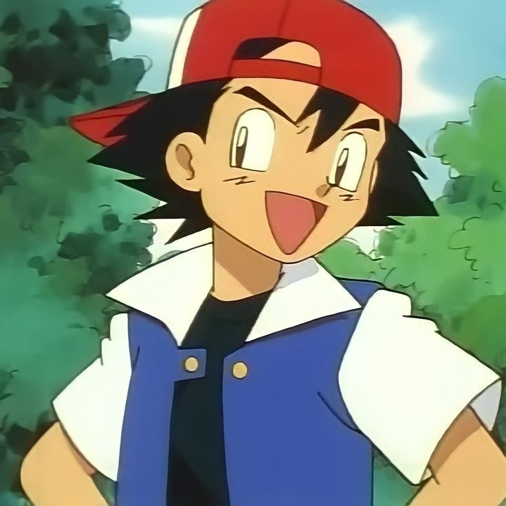
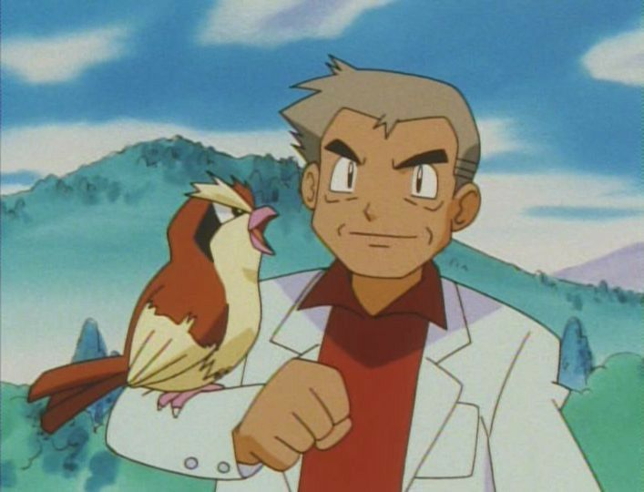
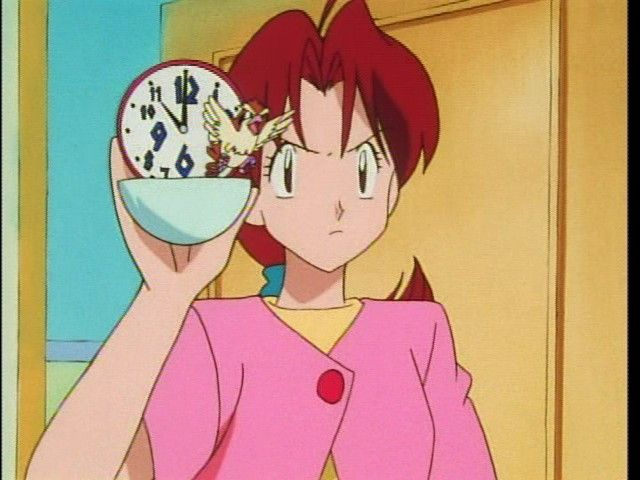
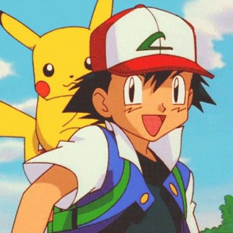
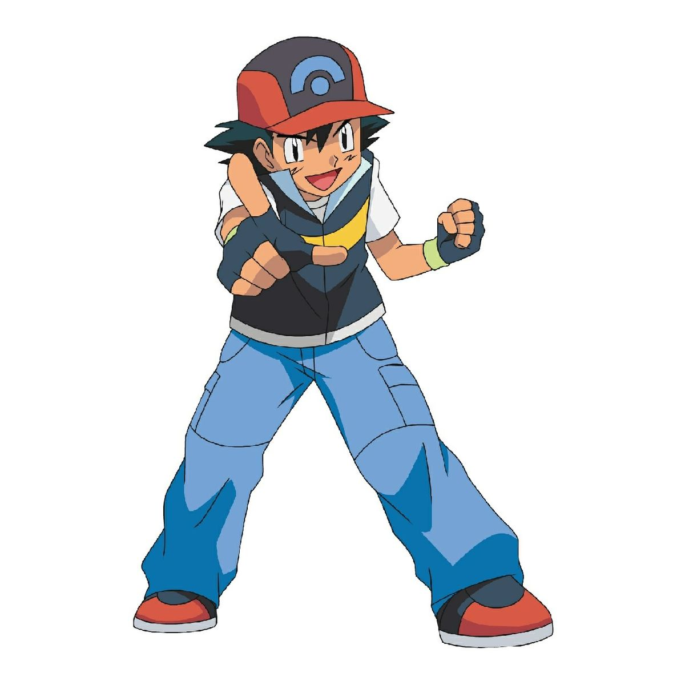

| PRESENTACIÓN | POKÉMON | PIKACHU DE ASH | EQUIPO ROCKET | FUENTES |
Ash Ketchum (サトシ Satoshi en japonés) es el protagonista del anime de Pokémon. Ha aparecido en todos
los episodios desde el primero, incluyendo todas las películas. Ha viajado por Kanto, Johto, Hoenn,
Sinnoh, Teselia, Kalos, Alola y Galar.[Pokémon Wiki, s. f.]



Siempre va con una sonrisa y su cara en alto, viajando a través de las regiones del mundo Pokémon
acompañado de sus amigos. Pero al igual que amigos, por su estilo tan positivo y su forma de entrenar
a sus Pokémon han tenido rivales muy fuertes, como es en el caso de Gary y Paul/Polo, en su camino de
convertirse en maestro Pokémon.
Es muy positivo tratando siempre de encontrar el lado bueno a las cosas, y siempre con un buen sentido
del humor y una buena actitud que afronta lo que le venga encima, pero así mismo en momentos de mucha
presión llega a estresarse de gran manera, sobretodo en medio de un combate. A veces suele ser tan
entusiasta con los combates de gimnasio y se obsesiona tanto que puede llegar a ser algo egoísta, pero
nunca ha llegado a males mayores.
Aunque aun así ha habido ocasiones en las que se le ha visto inseguro e inquieto por una derrota,
pero sus amigos le han ayudado a volver a ser como es siempre, animándole a ser mejor entrenador y
persona. Ash también puede llegar a ser rudo cuando alguien ofende a sus Pokémon, como se puede ver
en el episodio La ambición ardiente de Charizard (ES) / La gran ambición de Charizard (HA), donde
Liza le dice que su Charizard es débil y necesita mucho entrenamiento, provocando que Ash se enfade.
Considera los combates más como un reto que como otra actividad o trabajo. Es muy impulsivo y glotón,
y aunque a veces tiene obstáculos en su camino, él nunca se rinde. Ve a sus Pokémon como si fueran sus
amigos y aliados y nunca siente rabia ni envidia por aquellos que le vencen, como en el caso de Tyson o
Tobías en el Campeonato de la Liga Hoenn y en el Torneo de la Liga de Sinnoh, quienes le ganaron. No lo
ve como un límite, sino derrotas que le llevarán a superarse a sí mismo en la siguiente liga (ya que
Ash ha ido ganando ventaja o se ha quedado en el mismo puesto en todas las ligas, menos en la Liga de
Teselia).[Pokémon Wiki, s. f.]

Ash es un chico de estatura media-baja, ojos marrón claro (eran marrón oscuro de la primera a la
decimotercera temporada), pelo negro azulado y tez clara. En sus mejillas tiene unas pequeñas marcas.
Siempre lleva a sus Pokémon en su cinturón. Lleva mochila, gorra y sus guantes, que en cada generación
(excepto en Johto) cambian.
Ash utilizaba un chaleco azul con mangas y cuello blanco (se parece mucho a la de Rojo de Pokémon Rojo
y Azul y Pokémon Amarillo), una camisa negra por dentro, pantalones azules y zapatos negros con blanco.
Sus guantes eran verdes y su gorra era roja con blanco, con el símbolo de la expo oficial de la liga
Pokémon color verde. Su mochila era verde con una raya amarilla en el medio.

| REGRESAR | SIGUIENTE |